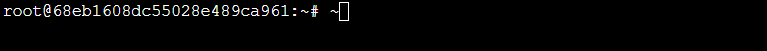

版权信息
warning
本文章为博主原创文章。遵循 CC 4.0 BY-SA 版权协议，转载请附上原文出处链接和本声明。
- 1. 前言
- 2. 操作习惯部分
- 3. 🔐安全部分
- 4. 系统维护部分
- 5. 系统运行部分
1. 前言
前几天在七牛云租了一台轻量应用级服务器，2c4gb，足够满足玩具的需求了。第一次玩服务器，现在把自己的搭建环境的过程记录一下，方便日后操作。
云服务器系统：Ubuntu 24.04 LTS
云服务器厂商：七牛云
云服务器规格：轻量型 T1 2C4GB CPU型
2. 操作习惯部分
2.1. 修改主机名
ssh登录到服务器后，发现主机名是一坨乱码，看着太难受了，必须改了。

永久修改主机名命令：
sudo hostnamectl set-hostname myserver重启生效。
2.2. 配置时区
输入 date 命令，发现服务器使用的世界协调时（UTC），改为中国标准时（UTC+8），符合习惯。
sudo timedatectl set-timezone Asia/Shanghai运行后，使用 timedatectl 命令确认是否修改成功，并查看 NTP service 是否启用，这是自动同步网络时间，可保持时间精准。若未启用则需查询相关教程启用。
3. 🔐安全部分
此部分需格外重视！
3.1. 重新设置root密码为强密码
不用多说，passwd 命令即可。
3.2. 添加用户并设置强密码
adduser yourname添加到sudo组：
usermod -aG sudo yourname查看用户组：
cat /etc/group查看当前用户所属组：groups命令。
设置完成后，退出root用户登录，用SSH以普通用户重新登录到服务器。
3.3. 系统升级
sudo apt update
sudo apt upgrade3.4. 使用SSH Key远程登录而不是密码
SSH Key 登录比密码安全很多，几乎无法破解。本质就是让服务器识别你的电脑，只有你的电脑才能登录到服务器。
3.4.1. 在本地电脑上生成密匙对：
ssh-keygen -t rsa -b 4096-t：指定密匙类型，rsa是经典算法，兼容性好。-b：指定密匙长度为4096位。
它会提示你几个问题：
Generating public/private rsa key pair. Enter file in which to save the key (/home/yourname/.ssh/id_rsa):这时候：
- 直接回车 就会把密钥生成在默认位置：
- 私钥：
~/.ssh/id_rsa，绝对不能泄露！ - 公钥：`~/.ssh/id_rsa.pub
- 私钥：
- 或者指定位置及文件名。
接着会提示：
Enter passphrase (empty for no passphrase):这里你可以选择：
- 直接回车：不设置密码，登录更方便；
- 输入密码短语：多一层保护（每次用私钥登录都要输入这串密码）。
3.4.2. 创建config文件
有时，我们不只有一个ssh密匙对，比如我为github生成了一个密匙对，也给服务器生成了一个。如果使用了非默认名称的密钥文件，需要在 ~/.ssh/config 文件中进行配置。
在本地保存ssh密匙对文件的文件夹里，打开或创建名为 config 的文件，无需后缀名。编辑该文件，示例：
# GitHub（常见）
Host github.com
HostName github.com
User git
IdentityFile ~/.ssh/id_ed25519_github
IdentitiesOnly yes
# 我的服务器
Host myserver #你的主机名
HostName 1.2.3.4 #主机ip地址/域名
User someone #你要登录的用户
Port 22 # 如果你改过SSH端口就写上，默认22
IdentityFile ~/.ssh/id_rsa_server
IdentitiesOnly yes| 参数 | 含义 |
|---|---|
Host |
自定义的别名（可以随意起名） |
HostName |
实际的服务器域名或 IP 地址 |
User |
登录用户名 |
Port |
SSH 端口（没改的话默认 22） |
IdentityFile |
私钥文件路径 |
IdentitiesOnly yes |
只使用指定的私钥，避免自动尝试其他 key 导致拒绝 |
3.4.3. 复制公匙到服务器
方式1
在服务器创建一个文件夹保存ssh公匙，服务器用它来识别远程登录到它的电脑。
mkdir ~/.ssh
touch ~/.ssh/authorized_keys
sudo chmod 700 ~/.ssh
sudo chmod 600 ~/.ssh/authorized_keys之后使用nano编辑器，将本地的.pub文件里的内容复制到authorized_keys即可。
- 千万别上传私钥（例如
id_rsa、id_ed25519）。只传*.pub。- 权限必须正确：- 确保服务器
~/.ssh权限是700，~/.ssh/authorized_keys权限是600，否则 SSH 会拒绝使用密钥。- 每个公钥一行，不要插入换行或空格。
authorized_keys可包含多把公钥（多台电脑可共用）。
方式2
window可使用gitbash。linux直接输入：
ssh-copy-id -i ~/.ssh/id_rsa_server.pub root@SERVER_IP-i后面是你本地的公钥文件（比如~/.ssh/id_rsa_server.pub）。- 运行会提示输入服务器密码，然后把公钥追加到服务器
~/.ssh/authorized_keys。
注意不要错传成私匙！
3.4.4. 登录
尝试在本地ssh登录。正常的话不用输密码就可以直接登陆上：
ssh Host3.5. 改ssh端口&配置防火墙
警告：此步操作需要谨慎，至少保留一个已登录的ssh终端，否则如果操作不当会导致被锁（无法登录到服务器），正确配置之前先不要启用防火墙。
3.5.1. 初步配置
Ubuntu 内置了UFW防火墙。通过防火墙，尽可能少的暴露端口，提升安全性。
我们首先允许以下端口：
- 22端口：SSH默认端口
- 80端口：HTTP服务，如果你在服务器上架网站，这个端口必须开放。
- 443端口：HTTPS服务
sudo ufw default deny incoming
sudo ufw default allow outgoing
sudo ufw allow 22/tcp # SSH端口
sudo ufw allow 80/tcp # HTTP
sudo ufw allow 443/tcp # HTTPSsudo ufw default deny incoming：默认拒绝所有进入服务器的流量（incoming traffic）。除非你明确允许某个端口，否则外部无法连接到你的服务器。
sudo ufw default allow outgoing：默认允许服务器发出的所有流量（outgoing traffic）。服务器可以自由访问外部网络（比如下载更新、访问 API 等）。
3.5.2. 改SSH端口
注意：保留一个已经登录的 SSH 窗口，先测试新端口可用再关闭旧窗口，避免自己被锁。
不使用默认SSH端口登录，提高安全性。
- 编辑 SSH 配置：
sudo nano /etc/ssh/sshd_config找到：#Port 22
修改为：Port your_ssh_port
建议 SSH 改到 1024 以上，最好 2000~65000 的范围，例如 2222、22022、55222。
- 防火墙允许该端口并启用防火墙
sudo ufw allow your_ssh_port/tcp
sudo ufw enable运行 sudo ufw status 命令检查防火墙规则。
应该显示：
To Action From
-- ------ ----
22/tcp ALLOW Anywhere
80/tcp ALLOW Anywhere
443/tcp ALLOW Anywhere
your_ssh_port/tcp ALLOW Anywhere
22/tcp (v6) ALLOW Anywhere (v6)
80/tcp (v6) ALLOW Anywhere (v6)
443/tcp (v6) ALLOW Anywhere (v6)
your_ssh_port/tcp (v6) ALLOW Anywhere (v6)-
重启 SSH：
sudo systemctl restart ssh -
测试新端口：
ssh -p your_ssh_port root@SERVER_IP
如果第四步访问被拒绝，别慌，使用命令：
sudo sshd -T | grep port如果输出的是你设定的端口号，且ufw中允许了设定端口，那么可以忽略保留ssh窗口的note，直接重启云服务器，重新以新端口号登录，应该可以成功。
3.5.3. 关闭22端口
成功登录后，可以关闭22端口了
sudo ufw delete allow 22/tcp
sudo ufw reload
sudo ufw status3.6. ssh配置文件
依旧：
sudo nano /etc/ssh/sshd_config3.6.1. 禁用 root远程登录&密码登录
配置文件中设置：
PermitRootLogin no # 禁用root登录
PasswordAuthentication no # 禁用密码登录对于第二个选项，请自行决定。至于暴力破解，用Fail2ban工具可以防暴力破解。
| 配置 | 优势 | 风险 |
|---|---|---|
| PasswordAuthentication yes | 可以用密码登录（灵活） | 容易被暴力破解，安全性低 |
| PasswordAuthentication no | 安全性高，防止暴力攻击 | 如果 SSH Key 配置有问题，可能登录不上 |
3.6.2. 使用SSH2
Protocol指定 SSH 使用的协议版本：- Protocol 1：SSH-1，存在严重安全漏洞，不再推荐
- Protocol 2：SSH-2，更安全，更稳定
- 现代 Linux 发行版默认使用 Protocol 2，但最好确认配置文件里明确指定。
在配置文件中修改或在适当位置添加：
Protocol 23.6.3. 重启ssh
sudo systemctl restart ssh3.7. Fail2ban工具防暴力破解
该工具可以自动封禁暴力破解 IP。
sudo apt install fail2ban
sudo systemctl enable fail2ban
sudo systemctl start fail2ban3.7.1. 配置fail2ban
sudo nano /etc/fail2ban/jail.local
# 添加：
[sshd]
enabled = true
maxretry = 5
findtime = 86400
bantime = 86400- enabled → 是否启用该 jail
- port → SSH 服务端口（可用逗号指定多个端口，如 22,2222）
- maxretry → 超过多少次失败被 ban
- bantime → 封禁持续时间，可改为
-1永久封禁 - findtime → 在findtime时间内输入maxretry次错误密码即被封禁。
3.7.2. 查看状态
sudo fail2ban-client statusStatus for the jail: sshd
|- Filter
| |- Currently failed: 3
| |- Total failed: 15
| `- File list: /var/log/auth.log
`- Actions
|- Currently banned: 1
|- Total banned: 5
`- Banned IP list: 123.45.67.89Banned IP list→ 被封禁的 IPCurrently banned→ 当前封禁数量
3.7.3. 解封ip
如果自己被 ban，可以在服务器端解封（假设你的 IP 是 1.2.3.4）：
sudo fail2ban-client set sshd unbanip 1.2.3.4解封后你可以正常 SSH 登录。
3.7.4. 启用fail2ban
sudo systemctl enable --now fail2ban3.7.5. 小贴士
- 改规则前保持一个活动 SSH 会话，测试新规则生效再退出
- 先小范围测试：例如
maxretry = 3, bantime = 60，确认不会误锁自己 - 定期检查：
sudo fail2ban-client status sshd
sudo fail2ban-client status做完上面部分后，在云服务器后台创建一个自定义镜像，备份一下，方便日后快速恢复。